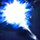
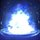
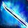

- 샤픈 마나를 통해 빠져나온 모든 마나를 흡수합니다.
- 흡수한 마나는 MP로 채워집니다.
- 드레인 마나 사용과 동시에 적의 공격이 가해지면 [퍼펙트 드레인] 효과로 적의 공격을 흡수하여 대미지를 입지 않습니다.
- [퍼펙트 드레인]에 성공하면 모든 마나 흡수량이 상승하여 MP를 추가로 획득합니다.
[조작법]
마우스: 이동 키를 누르지 않은 상태에서 회피[Space키]
키보드: 이동 키를 누르지 않은 상태에서 회피[A]
A랭크까지 필요한 AP: 740
참조 영상
샤픈 마나
설명/능력치/조건
- 마나 블레이드를 활성화하지 않은 기본 롱블레이드 공격입니다.
- 공격에 성공할 때마다 대상에게서 마나가 빠져나오게 합니다.
- 공격 단계가 높아질수록 대상에게서 빠져나오는 마나의 양도 늘어납니다.
- PvP에서는 더욱 증가합니다.
- 드레인 마나를 통해 빠져나온 마나를 흡수할 수 있습니다.
- A랭크 이상일 때는 샤픈 마나 공격 중에 적을 추격하는 추가 공격을 사용할 수 있습니다.
- 샤픈 마나 1~5단계 공격 도중 1번만 사용할 수 있으며, 추가 공격 후에는 이전의 샤픈 마나 공격 단계가 이어집니다.
[조작법]
마우스: [좌클릭] X 최대 5회
키보드: [S] X 최대 5회
[A랭크부터]
마우스: 샤픈 마나 공격 도중 [좌클릭] 누르고 있기
키보드: 샤픈 마나 공격 도중 [S] 누르고 있기
A랭크까지 필요한 AP: 1350
참조 영상
디퓨전 시프트
설명/능력치/조건
- 마나 파동을 일으켜 그 반탄력으로 빠르게 이동합니다.
- 이동 중에는 짧은 시간 동안 대미지를 입지 않습니다.
[조작법]
마우스: 이동 키를 누른 상태에서 회피[Space키]
키보드: 이동 키를 누른 상태에서 회피[A]
A랭크까지 필요한 AP: 740
참조 영상
마나 스톤
설명/능력치/조건
- 캐스틀릿 장착 시에만 사용 가능합니다.
- 캐스틀릿에 마나를 모아 형상화한 마나 스톤을 던집니다.
- 마나 스톤에 닿은 대상은 대미지를 입고 공중으로 띄워집니다.
- 마나 스톤은 전방으로 일정 거리 날아간 후 멈추며, 20초 이내에 다시 회수할 수 있습니다. 만약 롱블레이드 공격 도중에 마나 스톤을 던지거나 회수했다면, 짧은 시간 내 이전의 공격 단계를 이어갈 수 있습니다.
- 마나 스톤을 던진 상태에서 적에게 샤픈 마나 공격을 성공시키면 [마나 스톤: 인챈트] 효과가 발생합니다.
- [마나 스톤: 인챈트] 효과는 최대 5단계까지 상승하며, 5단계가 되면 마나 스톤을 회수할 때의 공격력이 크게 증가합니다.
- [마나 스톤: 인챈트] 5단계의 마나 스톤 회수 공격은 대상에게서 마나가 빠져나오게 합니다.
- 마나 스톤은 던져진 후 최초에 닿은 대상을 기억합니다. 다시 회수하면 기억된 대상을 향해 날아간 후 다시 돌아오게 됩니다.
- 마나 스톤의 회수 중에 닿은 대상에게는 던질 때보다 더 많은 공격을 가합니다. (대상 각각 최대 3회)
- [워프홀]을 배웠다면 마나 블레이드 활성화 중에는 직접 회수할 수 없으며, 20초 후 자동으로 회수됩니다. 마나 블레이드 활성화 중의 마나 스톤은 기본적으로 [마나 스톤: 인챈트] 5단계의 공격력으로 발동합니다.
- PvP에서는 [마나 스톤: 인챈트] 효과 발생 시 5단계로 바로 적용됩니다. 이때 마나 스톤의 띄우기 효과는 [마나 스톤: 인챈트] 5단계에서만 발동합니다.
[조작법]
마우스: 롱블레이드 공격 전/후에 [우클릭]
키보드: 롱블레이드 공격 전/후에 [D]
- 회수할 때도 조작키는 동일합니다.
A랭크까지 필요한 AP: 740
참조 영상
디멘션 홀
설명/능력치/조건
- 캐스틀릿 장착 시에만 사용 가능합니다.
- 디멘션 홀은 마나 스톤을 던진 후 사용할 수 있는 스킬입니다.
- 사용한 시점에서 마나 스톤을 터뜨려 일정 범위의 적에게 피해를 줍니다. [마나 스톤: 인챈트 5단계] 또는 마나 블레이드 활성화 중에는 대미지가 증가합니다.
- 또한, 사용 즉시 터뜨린 마나 스톤의 에너지를 스태미나로 흡수합니다.
- 드레인 마나를 익혔다면 디멘션 홀로 공격한 대상에게서 마나가 빠져나오게 합니다. 단, 이 공격은 퍼펙트 드레인 시 마나 흡수량 상승에 포함되지 않습니다.
[조작법]
[마나 스톤을 던진 이후]
필요 SP: 0
퀵슬롯에 등록해 숫자키를 눌러 사용하거나 [X]키로 전환 후 [Z]키를 눌러 사용할 수 있습니다.
A랭크까지 필요한 AP:740
참조 영상
마나 리전
설명/능력치/조건
- 캐스틀릿 장착 시에만 사용 가능합니다.
- 마나 리전은 마나 스톤을 던진 후 사용할 수 있는 스킬입니다.
- 사용한 시점에서 마나 스톤을 터뜨려 일정 범위에 마나 지역을 형성합니다. 마나 지역에 위치한 적은 5초간 매초 피해를 입습니다.
- [마나 스톤: 인챈트 5단계] 또는 마나 블레이드 활성화 중에는 대미지가 증가합니다.
- 사용 즉시 터뜨린 마나 스톤의 에너지를 스태미나로 흡수합니다.
- 드레인 마나를 익혔다면 마나 리전으로 공격한 대상에게서 마나가 빠져나오게 합니다. 단, 이 공격은 퍼펙트 드레인 시 마나 흡수량 상승에 포함되지 않습니다.
[조작법]
[마나 스톤을 던진 이후]
필요 SP: 0
퀵슬롯에 등록해 숫자키를 눌러 사용하거나 [X]키로 전환 후 [Z]키를 눌러 사용할 수 있습니다.
A랭크까지 필요한 AP:740
참조 영상
캐스트 마나
설명/능력치/조건
- 마나 파동을 쏘아내 적중한 적에게 마나의 흔적을 남깁니다.
- 마나의 흔적을 남겼다면 대상의 앞으로 워프할 수 있습니다.
- 적중시킨 후 60초 이내에 워프하지 않으면 효과가 사라집니다.
- 아래 행동 이후에는 특정 키를 입력하여 근접한 대상에게 캐스트 마나를 사용할 수 있습니다.
- 디퓨전 시프트, 샤픈 마나 추가 공격, 워프 홀, 캐스트 마나 워프 : 이 경우 공격한 대상에게서 마나가 빠져나오게 합니다. 사정 거리가 짧으나, 사용 시 언제라도 마나의 흔적을 남길 수 있습니다.
[조작법]
필요 SP: 50
퀵슬롯에 등록해 숫자키를 눌러 사용하거나 [X]키로 전환 후 [Z]키를 눌러 사용할 수 있습니다.
SP는 적중 후 워프를 시도할 때 소모됩니다.
[캐스트 마나 적중 후 워프]
퀵슬롯에 등록한 키 누르기 또는 [X]키로 전환 후 [Z]키로 눌러 사용
[디퓨전 시프트 연계]
마우스: 디퓨전 시프트 후 잡기[E]
키보드: 디퓨전 시프트 후 잡기[W]
[샤픈 마나 연계]
마우스: 샤픈 마나 추가 공격 후 잡기[E]
키보드: 샤픈 마나 추가 공격 후 잡기[W]
A랭크까지 필요한 AP: 1340
참조 영상
둠 세이어
설명/능력치/조건
- 공격과 동시에 마나 블레이드를 활성화 또는 비활성화 합니다.
- 추가 효과: 둠세이어를 사용함과 동시에 적의 공격이 가해지면 퍼펙트 드레인 효과가 발생합니다.
- 퍼펙트 드레인 효과로 대미지를 흡수하여 MP 100을 즉시 획득합니다.
- A랭크부터 공격 이후에 특정 키 입력에 성공하면 추가 공격으로 [액티브: 둠세이어]를 다시 사용할 수 있습니다.
- 추가 공격은 화면 정면으로 발동되며, MP가 획득되지 않습니다. 또한, 조작 방법에 따라 마나 블레이드의 활성/비활성 상태를 변화시키지 않을 수 있습니다.
[조작법]
필요 SP: 100
퀵슬롯에 등록해 숫자키를 눌러 사용하거나 [X]키로 전환 후 [Z]키를 눌러 사용할 수 있습니다.
필요 SP: 100
마우스: 공격이 휘둘러진 후 [S] - [W]
키보드: 공격이 휘둘러진 후 [↓] - [↑]
[마나 블레이드를 전환하지 않는 추가 공격]
필요 SP: 100
마우스: 공격이 휘둘러진 후 [A] - [D]
키보드: 공격이 휘둘러진 후 [←] - [→]
A랭크까지 필요한 AP: 740
참조 영상
루인 블레이드
설명/능력치/조건
- 현재 가진 모든 SP를 소모하여 강력한 공격을 가합니다.
- 사용 시 롱블레이드를 휘두르기 전에 연속으로 특정 키 입력에 성공하면 공격력이 더욱 강화됩니다.
- 강화 공격 도중에는 일정 시간 동안 대미지를 입지 않으며, 적의 공격에 넘어지지 않습니다.
- 강화 공격은 화면 정면으로 발동됩니다.
- A랭크부터 강화 공격 이후에 특정 키 입력에 성공하면 추가 공격으로 [액티브: 둠세이어]를 SP 소모 없이 사용합니다.
- 추가 공격 [액티브: 둠세이어]는 화면 정면으로 발동됩니다.
- 만약 캐스트 마나를 맞춰둔 대상이 있다면 첫 공격 직전 또는 추가 공격 직전에 대상의 앞으로 워프하여 다시 키입력 기회를 얻을 수 있습니다. 이때의 워프는 SP 소모 없이 발동됩니다.
[조작법]
발동 조건: SP 250 이상 보유
필요 SP: 현재 보유한 모든 SP
퀵슬롯에 등록해 숫자키를 눌러 사용하거나 [X]키로 전환 후 [Z]키를 눌러 사용할 수 있습니다.
[강화 공격]
마우스: 롱블레이드를 휘두르기 전 [W] - [S] - [A] - [D] - [A] - [D] - [W] - [S]
키보드: 롱블레이드를 휘두르기 전 [↑] - [↓] - [←] - [→] - [←] - [→] - [↑] - [↓]
마우스: 강화 공격이 휘둘러진 후 [A] - [S] - [D] - [S] - [W]
키보드: 강화 공격이 휘둘러진 후 [←] - [↓] - [→] - [↓] - [↑]
[공격 직전 캐스트 마나 워프]
캐스트 마나를 맞춰둔 대상이 있다면 퀵슬롯에 등록한 [숫자키] 또는 [X]키로 전환 후 [Z]
A랭크까지 필요한 AP: 1350
참조 영상
레저넌스
설명/능력치/조건
- 캐스틀릿 장착 시에만 사용 가능합니다.
- 레저넌스는 거대한 마나의 소용돌이를 일으켜 그 중점에 마나 폭발을 일으키는 스킬입니다.
- 사용 시 공격할 위치를 지정할 수 있으며, 위치를 지정한 후 오랜 시전 시간을 거쳐 사용합니다.
[조작법]
필요 SP: 750
퀵슬롯에 등록해 숫자키를 눌러 사용하거나 [X]키로 전환 후 [Z]키를 눌러 사용할 수 있습니다.
A랭크까지 필요한 AP: 1530
참조 영상
로드 오브 마나
설명/능력치/조건
- 마나의 힘으로 일정 범위 내 적의 움직임을 멈추게 합니다.
- 적의 움직임이 회복될 때 추가로 큰 대미지를 입힙니다.
- PvP에서는 사용할 수 없습니다.
[조작법]
필요 SP: 1000
퀵슬롯에 등록해 숫자키를 눌러 사용하거나 [X]키로 전환 후 [Z]키를 눌러 사용할 수 있습니다.
A랭크까지 필요한 AP: 1530
참조 영상
마나 블레이드
설명/능력치/조건
- 롱블레이드에 마나를 주입하여 마나 블레이드를 활성화합니다.
- 마나 블레이드 활성화 중에는 방어력이 5% 하락하는 대신, 롱블레이드 공격과 마나 스톤의 효과가 변화하고, 다른 스킬을 사용할 수 있습니다.
- 마나 블레이드 활성화 중의 공격은 MP를 소모합니다.
 샤픈 마나
샤픈 마나 캐스트 마나
캐스트 마나 레저넌스
레저넌스 마나 블레이드
마나 블레이드